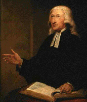

|
Оглавление
Предисловие 1. Оправдание верою Оправдание человека грешного не делает его святым, но отбрасывает от него грех, оправданием является прощение грехов, а освящение - путь в святости, процесс очищения и возвышения. 2. Великая привилегия рожденных свыше Несмотря на то, что оправдание и новое рождение происходят одновременно, они имеют отличия, как вещи абсолютно разные по своей природе. Оправдывая нас, Бог делает это для нас, в рождении же свыше Он производит работу в нас. Одно восстанавливает нас в Божьей милости, другое – в образ Божий. Одно забирает вину, другое – власть греха. Итак, происходя одновременно, они имеют отличия. Частичная потеря веры --> внутренний грех --> потеря веры --> внешний грех. 3. Грех в верующих Нет ничего зазорного признат, что в верющих людях тоже живет грх, но он не господствует над человеком. 4. Покаяние верующих В детях Божьих соприкасаются покаяние и вера. Через покаяние, мы чувствуем остающийся в нас грех, относящийся к словам и поступкам. С помощью веры, мы получаем Божью силу, очищающую наши сердца и руки. 5. Христианское совершенство " Я часто с удивлением замечал, что отрицающие совершенство противятся ему с большим неистовством, нежели чему-то другому. Они позволяют оставаться всему, что можно было бы допустить: любви к Богу и людям, Плоду Духа, полной святости, полному самоотвержению, освящению духа, души и тела, даже посвящению Богу всех наших мыслей, слов и поступков. Противление совершенству возникает, если только вы позволяете оставаться хоть малейшему греху." 6. Простое повествование о христианском совершенстве Вопросы, смиренно предложенные тем, кто отвергает возможность обретения совершенства в этой жизни. 7. Свидетельство Духа. Проповедь 1 8. Свидетельство Духа. Проповедь 2 9. Свидетельство нашего духа Человек, имеющий это свидетельство, может постоянно радоваться. Он может сказать: «Я радуюсь в Том, Кто в Своей любви, бесплатной и нежной милости призвал меня к спасению, в чем, благодаря Его силе, я сейчас нахожусь. Я радуюсь, потому что Его Дух свидетельствует моему духу, что я куплен кровью Агнца, и что веруя в Него, я дитя Божье, наследник царствия небесного. 10. Средства обретения благодати 11. Предупреждение против слепой приверженности «При сем Иоанн сказал: Учитель! Мы видели человека, который именем Твоим изгоняет бесов, а не ходит за нами; и запретили ему, потому что не ходит за нами. Иисус сказал: не запрещайте ему.» Марка 9:38, 39 12. Дух единства 13. Письмо римскому католику 14. Природа фанатизма 15. Использование денег 16. Совет в отношении одежды 17. Об одежде 18. Правила методистских домашних групп (написаны 25 декабря 1738 года) 19. Закон Божий. Его возникновение, свойства и использование 20. Закон, утвержденный верой. Проповедь 1 21. Закон, утвержденный верой. Проповедь 2 22. Первый диалог между антиноминистом и его другом 23. Второй диалог между антиноминистом и его другом 24. Диалог между верующим в предопределение и его другом 25. Спокойное рассмотрение предопределения |
|  |
Джон Уэсли
(англ. John Wesley, 17 июня 1703 Epworth — 2 марта 1791 Лондон) — английский протестантский проповедник, один из основателей (вместе с Джорджем Уайтфильдом) методизма. Cын английского писателя и богослова, учился в Оксфорде. Под влиянием сочинений Фомы Кемпийского и Тейлора он уже в 1729 г. основал в Оксфордском университете вместе со своим братом Чарльзом (1708—1788) и другими 15 студентами "Общество для чтения Библии, молитвы и добрых дел". За свой спокойный, правильный, методический образ жизни они были прозваны в насмешку "методистами". |
|
Уэсли в 1735 г. отправился в Америку; там он отказался от всех радостей жизни, не пил вина, не ел мяса, спал на голой земле. Своим фанатизмом и нетерпимостью он нажил себе много врагов и в 1738 г. вернулся в Англию. В Англии, действуя сначала в союзе с гернгутерами, он основал по образцу братских общин самостоятельные религиозные общества. Он ежегодно посещал все общины методистов, называвшиеся "веслеянскими"; очень часто говорил проповеди, которых произнёс всего около 50000. В Кинсеварде Уэсли устроил семинарию для методистских проповедников. В 1749 г. он женился, хотя раньше проповедовал безбрачие; но женитьба его была неудачна, и он скоро разошёлся с женой. При написании этой статьи использовался материал из Энциклопедического словаря Брокгауза и Ефрона (1890—1907). |